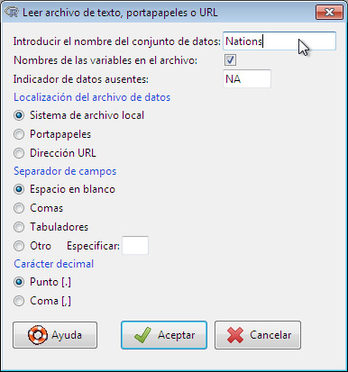
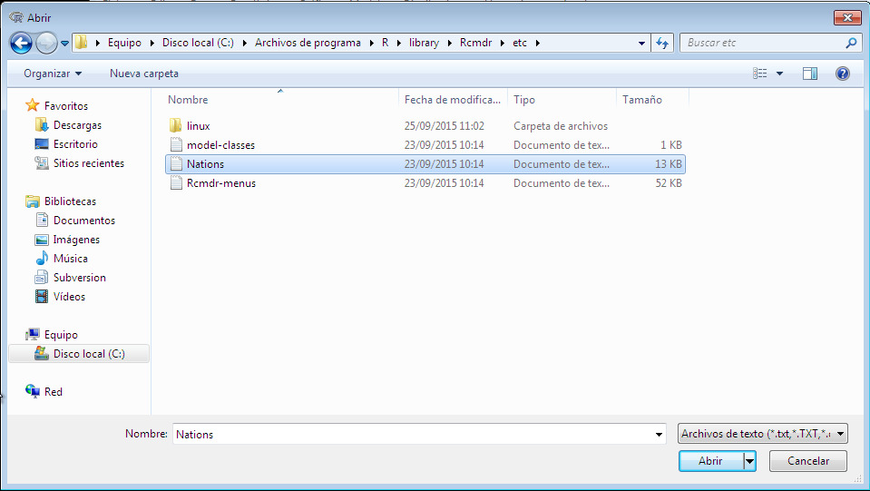
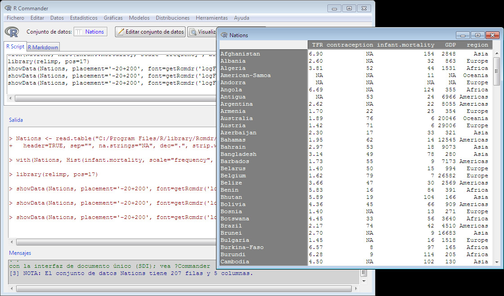
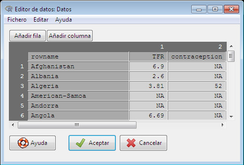
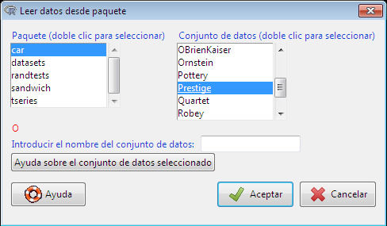

Most of the procedures in the R Commander assume that there is an active data set.La mayoría de los procedimientos en R Commander asumen que existe un conjunto de datos activo.1Procedures selected under via the Distributions menu are exceptions, as is Enter and analyze two-way table… under the Statistics -> Contingency tables menu.Las excepciones son los procedimientos seleccionados a través del menú Distribuciones, al igual que la opción Introducir y analizar tabla de doble entrada… del menú Estadística -> Tablas de contingencia. If there are several data sets in memory, you can choose among them, but only one is active. When the R Commander starts up, there is no active data set.Si hay varios conjuntos de datos en la memoria, puede elegir entre ellos, pero solo uno estará activo. Cuando el R Commander se inicia, no hay ningún conjunto de datos activo.
The R Commander provides several ways to get data intoR:R Commander proporciona varias formas de incorporar datos a R:
- Using the R Commander data editor, You can enter data directly via Data -> New data set…. This is a reasonable choice only for a very small data set.Utilizando el editor de datos de R Commander, puede introducir datos directamente a través de Datos -> Nuevo conjunto de datos…. Esta es una opción razonable únicamente para un conjunto de datos muy pequeño.
- You can import data from a plain-text («ascii») file or the clipboard, over the internet from a URL, from another statistical package (Minitab, SPSS, SAS, or Stata), or from an Excel spreadsheet.You can import data from a plain-text («ascii») file or the clipboard, over the internet from a URL, from another statistical package (Minitab, SPSS, SAS, or Stata), or from an Excel spreadsheet.
- You can read a data set that is included in an R package, either typing the name of the data set (if you know it), or selecting the data set in a dialog box.Puede leer un conjunto de datos incluido en un paquete de R, ya sea escribiendo el nombre del conjunto de datos (si lo conoce) o seleccionando el conjunto de datos en un cuadro de diálogo.
Reading Data From a Text FileLectura de datos desde un archivo de texto
For example, consider the data file Nations.txt.Por ejemplo, considere el archivo de datos Nations.txt. 2This file resides in the etc subdirectory of theRcmdr package. The data are for 1998 and are from the United Nations.Este archivo se encuentra en el subdirectorio etc del paquete Rcmdr. Los datos corresponden a 1998 y proceden de las Naciones Unidas. The first few lines of the file are as follows:Las primeras líneas del archivo son las siguientes:
TFR contraception infant.mortality GDP region Afghanistan 6.90 NA 154 2848 Asia Albania 2.60 NA 32 863 Europe Algeria 3.81 52 44 1531 Africa American-Samoa NA NA 11 NA Oceania Andorra NA NA NA NA Europe Angola 6.69 NA 124 355 Africa Antigua NA 53 24 6966 Americas Argentina 2.62 NA 22 8055 Americas Armenia 1.70 22 25 354 Europe Australia 1.89 76 6 20046 Oceania . . .
- The first line of the file contains variable names: TFR (the total fertility rate, expressed as number of children per woman), contraception (the rate of contraceptive use among married women, in percent), infant.mortality (the infant-mortality rate per 1000 live births), GDP (gross domestic product per capita, in U.S. dollars), and region.La primera línea del archivo contiene los nombres de las variables: TFR (la tasa total de fertilidad, expresada como el número de hijos por mujer), contraception (la tasa de uso de anticonceptivos entre mujeres casadas, en porcentaje), infant.mortality (la tasa de mortalidad infantil por cada 1000 nacidos vivos), GDP (el producto interior bruto per cápita, en dólares estadounidenses) y region.
- Subsequent lines contain the data values themselves, one line per country. The data values are separated by «white space» — one or more blanks or tabs. Although it is helpful to make the data values line up vertically, it is not necessary to do so. Notice that the data lines begin with the country names. Because I want these to be the «row names» for the data set, there is no corresponding variable name: That is, there are five variable names but six data values on each line, the first of which is alphabetic. When this happens, the R read.table command will interpret the first value on each line as the row name.Las líneas subsiguientes contienen los propios valores de los datos, una línea por país. Los valores de los datos están separados por «espacio en blanco» — uno o más espacios o tabulaciones. Aunque resulta útil hacer que los valores de los datos se alineen verticalmente, no es necesario hacerlo. Note que las líneas de datos comienzan con los nombres de los países. Dado que deseo que estos sean los «nombres de fila» para el conjunto de datos, no hay ningún nombre de variable correspondiente: es decir, hay cinco nombres de variables pero seis valores de datos en cada línea, el primero de los cuales es alfabético. Cuando esto sucede, el comando read.table de R interpretará el primer valor de cada línea como el nombre de la fila.
- Some of the data values are missing. In R, it is most convenient to use NA (representing «not available») to encode missing data, as I have done here.Algunos de los valores de los datos faltan. En R, lo más conveniente es utilizar NA (que representa «no disponible») para codificar los datos faltantes, tal como he hecho aquí.
- The variables TFR, contraception, infant.mortality, and GDP are numeric (quantitative) variables; in contrast, region contains region names. When the data are read, R will treat region as a «factor» — that is, as a categorical variable. In most contexts, the R Commander distinguishes between numerical variables and factors, and will try to prevent you from doing unreasonable things, such as computing the mean of a factor.Las variables TFR, contraception, infant.mortality y GDP son variables numéricas (cuantitativas); en cambio, region contiene nombres de regiones. Cuando se leen los datos, R tratará region como un «factor» — es decir, como una variable categórica. En la mayoría de los contextos, el R Commander distingue entre variables numéricas y factores, e intentará evitar que haga cosas ilógicas, como calcular la media de un factor.3Character varaibles, whose values are character strings, and logical variables, whose values are TRUE or FALSE are treated as factors by the R Commander.Las variables de caracteres, cuyos valores son cadenas de caracteres, y las variables lógicas, cuyos valores son TRUE o FALSE, son tratadas como factores por el R Commander.

To read the Nations.txt data file into R, select Data -> Import data -> from text file, clipboard, or URL… from the R Commander menus. This operation brings up a Read Text Data dialog, as shown in Figure 3. The default name of the data set is Dataset. I have changed the name to Nations.Para leer el archivo de datos Nations.txt en R, seleccione Datos -> Importar datos -> desde archivo de texto, portapapeles o URL… en los menús de R Commander. Esta operación abre el cuadro de diálogo Leer datos de texto, como se muestra en la Figura 3. El nombre por defecto del conjunto de datos es Dataset. He cambiado el nombre a Nations.

Valid R names begin with an upper- or lower-case letter (or a period, .) and consist entirely of letters, periods, underscores (_), and numerals (i.e., 0—9); in particular, do not include any embedded blanks in a data-set name. R is case-sensitive, and so, for example, nations, Nations, and NATIONS are distinguished, and could be used to represent different data sets.Los nombres válidos en R comienzan con una letra mayúscula o minúscula (o un punto, .) y constan enteramente de letras, puntos, guiones bajos (_) y números (es decir, 0—9); en particular, no incluya espacios en blanco dentro del nombre de un conjunto de datos. R distingue entre mayúsculas y minúsculas, por lo que, por ejemplo, nations, Nations y NATIONS son distintos y podrían utilizarse para representar diferentes conjuntos de datos.
Clicking the OK button in the Read Text Data dialog brings up an Open file dialog, shown in Figure 4. Here I navigated to and selected the file Nations.txt. Clicking the Open button in the dialog causes the data file to be read. Once the data file is read, it becomes the active data set in the R Commander. As a consequence, in Figure , the name of the data set appears in the data set button near the top left of the R Commander window. The command to read the Nations data set (the R read.table command) appears in the R Script tab and Output pane. As well, when the data set is read and becomes the active data set, a note appears in the Messages pane.Al hacer clic en el botón Aceptar del cuadro de diálogo Leer datos de texto se abre el cuadro de diálogo Abrir archivo, que se muestra en la Figura 4. Aquí me desplacé hasta el archivo Nations.txt y lo seleccioné. Al hacer clic en el botón Abrir del cuadro de diálogo se lee el archivo de datos. Una vez leído el archivo de datos, este se convierte en el conjunto de datos activo en el R Commander. Como consecuencia, en la Figura , el nombre del conjunto de datos aparece en el botón del conjunto de datos cerca de la esquina superior izquierda de la ventana de R Commander. El comando para leer el conjunto de datos Nations (el comando read.table de R) aparece en la pestaña Guion R y en el panel de Salida. Además, cuando se lee el conjunto de datos y se convierte en el conjunto de datos activo, aparece una nota en el panel de Mensajes.

I next clicked the View data set button to bring up the data viewer window, also shown in Figure 5.A continuación, hice clic en el botón Ver conjunto de datos para abrir la ventana del visor de datos, que también se muestra en la Figura 5.
The read.table command creates an R «data frame», which is an object containing a rectangular cases-by-variables data set: The rows of the data set represent cases or observations and the columns represent variables. Data sets in the R Commander are R data frames.El comando read.table crea una «hoja de datos» (o data frame) de R, que es un objeto que contiene un conjunto rectangular de datos organizados por casos y variables: Las filas del conjunto de datos representan casos u observaciones y las columnas representan variables. Los conjuntos de datos en el R Commander son data frames de R.
Entering Data DirectlyIntroducción directa de datos
You can enter data directly into the R Commander basic spreadsheet-like data editor. A simple alternative, which I in fact prefer, is to save the data in a plain-text file (be careful, if you create the data file with a word processor, to save it as a plain-text or «ascii» file), typically with file type .txt, and then to read the file as in the preceding section, via Data -> Import data -> from text file, clipboard, or URL… . If your data are already in a spreadsheet program, such as Excel, you can simply export the data to a comma-separated-values text file (.csv file), and read the file into the R Commander, being careful to specify the field separator as a comma. Recall that you can also read an Excel spreadsheet directly.Puede introducir datos directamente en el editor básico de datos similar a una hoja de cálculo de R Commander. Una alternativa sencilla, que de hecho prefiero, es guardar los datos en un archivo de texto plano (si crea el archivo de datos con un procesador de textos, tenga cuidado de guardarlo como un archivo de texto plano o «ascii»), normalmente con la extensión .txt, y luego leer el archivo como en la sección anterior, a través de Datos -> Importar datos -> desde archivo de texto, portapapeles o URL… . Si sus datos ya se encuentran en un programa de hoja de cálculo, como Excel, puede simplemente exportar los datos a un archivo de texto de valores separados por comas (archivo .csv) y leer el archivo en el R Commander, teniendo el cuidado de especificar la coma como separador de campos. Recuerde que también puede leer directamente una hoja de cálculo de Excel.

As an example of direct data input, I use a very small data set from Problem 2.44 in [1]:Como ejemplo de entrada directa de datos, utilizo un conjunto de datos muy pequeño del Problema 2.44 en [1]:
-
- Select Data -> New data set… from the R Commander menus. Optionally enter a name for the data set, such as Problem2.44, in the resulting dialog box, and click the OK button. (Remember that R names cannot include embedded blanks.) This will bring up a Data Editor window with an empty data set.Seleccione Datos -> Nuevo conjunto de datos… en los menús de R Commander. Opcionalmente, introduzca un nombre para el conjunto de datos, como Problem2.44, en el cuadro de diálogo resultante y haga clic en el botón Aceptar. (Recuerde que los nombres en R no pueden incluir espacios en blanco). Esto abrirá una ventana del Editor de datos con un conjunto de datos vacío.
- Enter the data from the problem into the first two columns of the data editor. Add a column by clicking the Add column button in the data editor toolbar, or by selecting Add column from the Edit menu. Similarly, add rows to the data set by clicking the Add row button repeatedly or via the Edit menu. You can also add a row by pressing the Enter key or add a column by pressing the Tab key when the cursor is in a cell in the data table.Introduzca los datos del problema en las dos primeras columnas del editor de datos. Añada una columna haciendo clic en el botón Añadir columna de la barra de herramientas del editor de datos, o seleccionando Añadir columna en el menú Editar. Del mismo modo, añada filas al conjunto de datos haciendo clic repetidamente en el botón Añadir fila o mediante el menú Editar. También puede añadir una fila presionando la tecla Intro o añadir una columna presionando la tecla Tabulador cuando el cursor se encuentre en una celda de la tabla de datos.
- You can move from one cell to another by using the arrow keys on your keyboard or by pointing with the mouse and left-clicking. Originally, the variables are named var1 and var2, and the data values are all NA (i.e., missing). When you type a new variable name, row name, or data value into a cell of the data editor, the new value replaces what was previously there. If you double-click in a cell, then the cell becomes NA. When you are finished entering the data, the data-editor window should look like Figure 6.Puede desplazarse de una celda a otra utilizando las teclas de flecha de su teclado o señalando con el ratón y haciendo clic izquierdo. Originalmente, las variables se llaman var1 y var2, y los valores de los datos son todos NA (es decir, faltantes). Cuando escribe un nuevo nombre de variable, nombre de fila o valor de datos en una celda del editor de datos, el nuevo valor reemplaza lo que había anteriormente allí. Si hace doble clic en una celda, la celda pasa a ser NA. Cuando haya terminado de introducir los datos, la ventana del editor de datos debería verse como en la Figura 6.
- In this example, both variables are numeric. If you type any non-numeric values in a column in the data editor (other than the missing value NA), then the column will define a factor (categorical variable) in the new data set.En este ejemplo, ambas variables son numéricas. Si escribe cualquier valor no numérico en una columna del editor de datos (aparte del valor faltante NA), la columna definirá un factor (variable categórica) en el nuevo conjunto de datos.
- Select File -> Exit and save from the Data Editor menus or click the OK button. The data set that you entered is now the active data set in the R Commander.Seleccione Archivo -> Salir y guardar en los menús del Editor de datos o haga clic en el botón Aceptar. El conjunto de datos que ha introducido es ahora el conjunto de datos activo en el R Commander.
Reading Data from a PackageLectura de datos desde un paquete

Many R packages include data. Data sets in packages can be listed in a pop-up window via Data -> Data in packages -> List data sets in packages, and can be read into the R Commander via Data -> Data in packages -> Read data set from an attached package.Muchos paquetes de R incluyen datos. Los conjuntos de datos de los paquetes se pueden listar en una ventana emergente mediante Datos -> Datos en paquetes -> Listar conjuntos de datos en paquetes, y se pueden leer en el R Commander a través de Datos -> Datos en paquetes -> Leer conjunto de datos desde un paquete adjunto.4Not all data in packages are data frames but only data frames are suitable for use in the R Commander. If you attempt to read data that are not in a data frame, the R Commander will try to change them into a data frame, printing a warning message if it’s successful and an error message if it’s not.No todos los datos de los paquetes son conjuntos de datos (data frames), pero solo los data frames son adecuados para su uso en el R Commander. Si intenta leer datos que no están en un data frame, el R Commander intentará convertirlos en uno, mostrando un mensaje de advertencia si tiene éxito y un mensaje de error si no lo tiene.The resulting dialog box is shown in Figure 7.El cuadro de diálogo resultante se muestra en la Figura 7.5The example shows data sets, including Prestige, residing in the car package; these data sets currently reside in the carData package, which is loaded along with the car package when the R Commander starts up.El ejemplo muestra conjuntos de datos, incluido Prestige, que residen en el paquete car; estos conjuntos de datos actualmente residen en el paquete carData, que se carga junto con el paquete car cuando se inicia el R Commander.If you know the name of a data set in a package then you can enter its name directly; otherwise double-clicking on the name of a package displays its data sets in the right list box; and double-clicking on a data set name copies the name to the data-set entry field in the dialog.6In general in the R Commander, when it is necessary to copy an item from a list box to another location in a dialog, a double-click is required.En general en el R Commander, cuando es necesario copiar un elemento de una casilla de lista a otra ubicación en un cuadro de diálogo, se requiere hacer doble clic.Pressing a letter key in the Data set list box will scroll to the next data set whose name begins with that letter. You can access additional R packages that are installed in your package library by Tools -> Load packages.Si conoce el nombre de un conjunto de datos en un paquete, puede introducir su nombre directamente; de lo contrario, hacer doble clic en el nombre de un paquete muestra sus conjuntos de datos en la casilla de lista derecha; y hacer doble clic en el nombre de un conjunto de datos copia el nombre al campo de entrada del conjunto de datos en el cuadro de diálogo. Presionar una tecla de letra en la casilla de lista Conjunto de datos se desplazará hasta el siguiente conjunto de datos cuyo nombre comience con esa letra. Puede acceder a paquetes adicionales de R instalados en su biblioteca de paquetes mediante Herramientas -> Cargar paquetes.
- D. S. Moore, The Basic Practice of Statistics, Second. New York: Freeman, 2000.